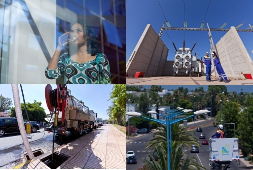

Notre mission
La LYDEC (Lyonnaise Des Eaux de Casablanca) est une filiale de Suez Lyonnaise des Eaux.
Le 15 avril 1997, elle s’est vu confier la gestion déléguée de la distribution d’électricité,
d’eau potable et du service d’assainissement liquide à Casablanca et à Mohammedia.
Depuis le début, elle a mobilisé tous ses moyens pour offrir un service de qualité aux habitants. Les actions et les investissements se sont multipliés pour doter la ville d'infrastructures à la mesure de son développement, moderniser les services à la clientèle à travers une meilleure qualité d'accueil et une facturation modernisée et fiable, lutter contre les inondations et sécuriser les installations électriques.
Poursuivant son engagement auprès de ses clients, LYDEC continue à investir dans les nouvelles technologies en lançant le paiement des factures par internet. Avec ce système de paiement, le client bénéficie de plusieurs avantages tels un service gratuit et accessible 24 heures sur 24 et 7 jours sur 7, que ce soit au Maroc ou à l'extérieur du pays. Une opération enregistrée en temps réel, rapide et sécurisée. Nos activités sont structurantes. Elles jouent un rôle majeur dans l'urbanisation à long terme, dans la conception de l'agglomération de demain. Experts dans nos métiers, nous participons à la réalisation des schémas directeurs de la ville et à l'élaboration de standards (en termes de qualité d'installation, de technologies…). Notre objectif est de fournir en continu un service de qualité à nos clients, tout en anticipant et en accompagnant le développement de l'agglomération.
Depuis le début, elle a mobilisé tous ses moyens pour offrir un service de qualité aux habitants. Les actions et les investissements se sont multipliés pour doter la ville d'infrastructures à la mesure de son développement, moderniser les services à la clientèle à travers une meilleure qualité d'accueil et une facturation modernisée et fiable, lutter contre les inondations et sécuriser les installations électriques.
Poursuivant son engagement auprès de ses clients, LYDEC continue à investir dans les nouvelles technologies en lançant le paiement des factures par internet. Avec ce système de paiement, le client bénéficie de plusieurs avantages tels un service gratuit et accessible 24 heures sur 24 et 7 jours sur 7, que ce soit au Maroc ou à l'extérieur du pays. Une opération enregistrée en temps réel, rapide et sécurisée. Nos activités sont structurantes. Elles jouent un rôle majeur dans l'urbanisation à long terme, dans la conception de l'agglomération de demain. Experts dans nos métiers, nous participons à la réalisation des schémas directeurs de la ville et à l'élaboration de standards (en termes de qualité d'installation, de technologies…). Notre objectif est de fournir en continu un service de qualité à nos clients, tout en anticipant et en accompagnant le développement de l'agglomération.
Activité
